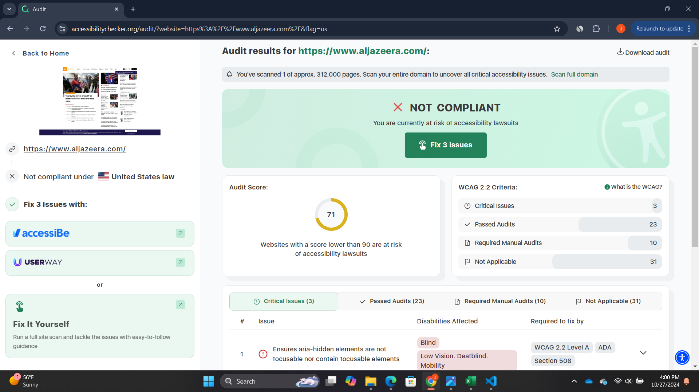

General Information
Website URL: https://www.aljazeera.com/
Target Audience: News readers and individuals interested in global current events, politics, and human rights issues.
Organization of the Site: The site is well-organized with a top navigation bar that categorizes different sections like News, Opinion, Features, and Programs. Headlines and featured stories are prominently displayed, while detailed news articles are accessible through various links and categories.
CRAP Design Principles
Contrast: The site uses clear contrast between text and background (white background with black text), with red and blue highlights for important headings and links.
Repetition: The consistent use of font styles and colors for headlines, subheadings, and links helps maintain visual uniformity across the site.
Alignment: All elements are well-aligned, particularly in a grid format. Text and images follow a clean and structured layout that makes content easy to navigate.
Proximity: Related content, such as articles and related news, is grouped together logically, making it easier for users to find what they need.
Accessibility Check
Audit Score: [71]
Screenshot: 
Usability Evaluation
Effectiveness: The site is effective in supporting users to find information quickly, with easy navigation and clearly categorized content.
Efficiency: Users can perform tasks efficiently due to the intuitive layout and navigation, allowing for fast access to news stories and articles.
Engagement: The design is visually engaging with multimedia content like videos, high-quality images, and articles, keeping users interested and informed.
Recommendation
A recommendation to improve the site would be to enhance the mobile experience by streamlining some of the text-heavy sections. Reducing the amount of scrolling required would improve usability for mobile users.